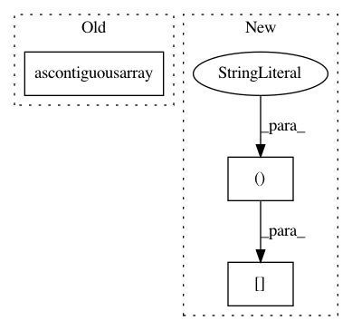

52f85fdec22f60addfd025042f5f2b7105db8cd4,doc/examples/denoise_nlmeans.py,,,#,11
Before Change
dname = "/home/eleftherios/Downloads/"
img = nib.load(dname + "t1.nii")
data = img.get_data().astype("float64")
data = np.ascontiguousarray(data, dtype="f8")
aff = img.get_affine()
mask = data > 30
After Change
plt.subplot(1, 2, 1).set_axis_off()
plt.imshow(data[:, :, axial_middle].T, cmap="gray", origin="lower")
plt.subplot(1, 2, 2).set_axis_off()
plt.imshow(den[:, :, axial_middle].T, cmap="gray", origin="lower")
plt.show()
plt.savefig("denoised_S0.png", bbox_inches="tight")
In pattern: SUPERPATTERN
Frequency: 3
Non-data size: 3
Instances
Project Name: nipy/dipy
Commit Name: 52f85fdec22f60addfd025042f5f2b7105db8cd4
Time: 2014-01-26
Author: garyfallidis@gmail.com
File Name: doc/examples/denoise_nlmeans.py
Class Name:
Method Name:
Project Name: nilearn/nilearn
Commit Name: 57447a51c963cf82622d991bbf4c97bc4c276219
Time: 2014-02-20
Author: virgile.fritsch@gmail.com
File Name: nilearn/mass_univariate/permuted_least_squares.py
Class Name:
Method Name: orthonormalize_matrix
Project Name: nilearn/nilearn
Commit Name: 57447a51c963cf82622d991bbf4c97bc4c276219
Time: 2014-02-20
Author: virgile.fritsch@gmail.com
File Name: nilearn/mass_univariate/permuted_least_squares.py
Class Name:
Method Name: normalize_matrix_on_axis